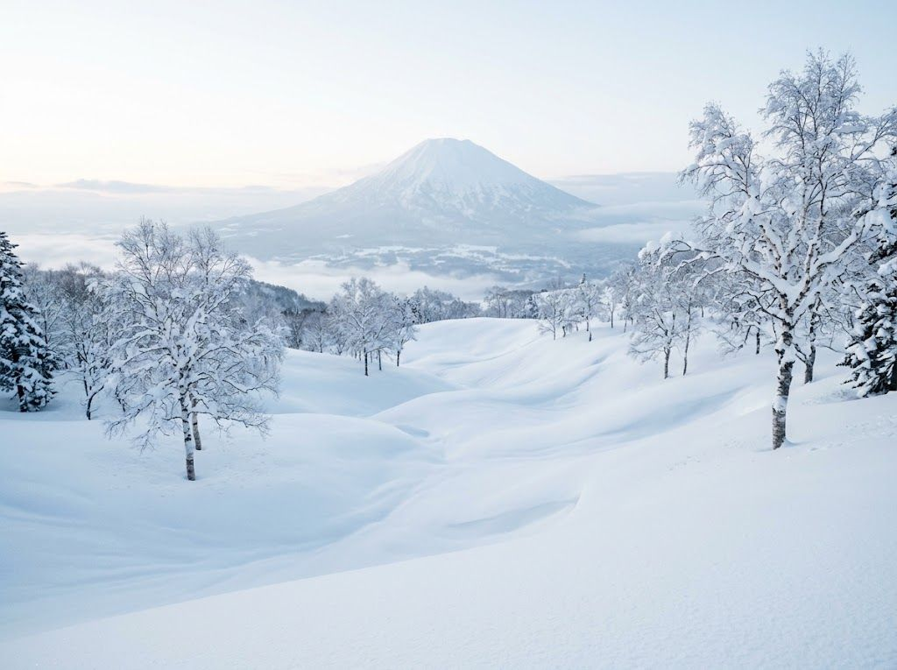

Sahoro
Sahoro / Club Med北海道 河東郡鹿追町
親子友善全包度假晴天率
本站怎麼判 十勝內陸、晴天率相對高。台灣團很常走 Club Med 全包。
不適合誰：想自己排餐廳、逛村、或趕著當日從新千歲來回的人。
從台灣怎麼到
- 桃園 → 新千歲 含飛行約 7.5–8.5 小時巴士往十勝／鹿追，約 2.5–3 小時
5 天預算帶
NT$50,000–90,0005 天 4 夜，幾乎等於 Club Med 套價。
運行資訊
例年 12 月～3 月。內陸晴天率是北海道加分項。
現場坑
- 自由行交通比二世谷、留壽都麻煩。
- 場中型，連續滑五天可能膩。
- 幾乎被全包套票綁住。
不滑雪的人
全包活動是為不滑雪的人設計的，這點成立。
看看社群怎麼說
本站整理，請讀原文。雪況類引用有日期，不是即時雪況。
日本當地
天候不穩的時期，Sahoro 晴天率相對高。
天候の荒れやすい時期ならサホロが好天率が高くていいでしょう。
這頁有錯？告訴我們